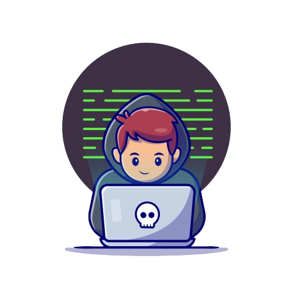

Sobre mim 👋
Olá, meu nome é Lucas, e aos 21 anos, sou Bacharel em Sistemas de Informação. Desde 2021, venho construindo minha carreira na área de tecnologia, inicialmente concentrando-me em atividades de suporte técnico, como Help Desk, manutenção e instalação de computadores, redes e sistemas, documentação de processos, além de outras atividades relacionadas a área.
No entanto, minha jornada profissional tomou um novo rumo em 2023, quando decidi dedicar-me ao desenvolvimento de software. Desde então, tenho me empenhado em me tornar um desenvolvedor Full Stack. Minha abordagem para essa transição envolve o estudo contínuo, a realização de projetos pessoais e a colaboração em projetos comunitários, nos quais tenho a oportunidade de aprimorar minhas habilidades e interagir com outras linguagens de programação.
Estou comprometido em expandir meu conhecimento e experiência na área de desenvolvimento, buscando constantemente desafios que me permitam crescer profissionalmente. Estou entusiasmado com as possibilidades que o mundo do desenvolvimento de software oferece e determinado a contribuir de forma significativa para projetos inovadores e inspiradores.